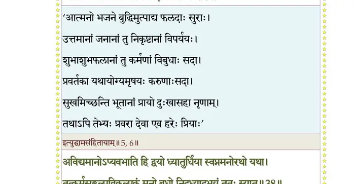
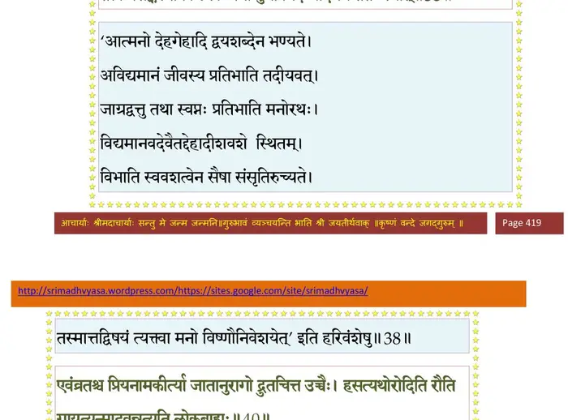
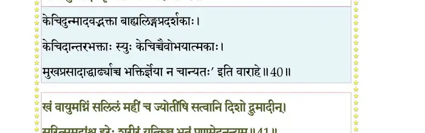
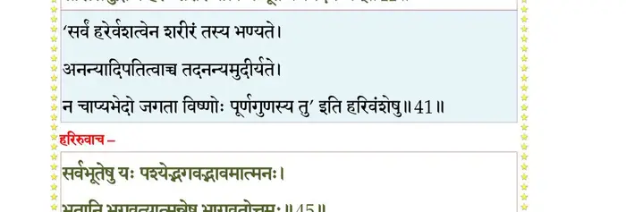
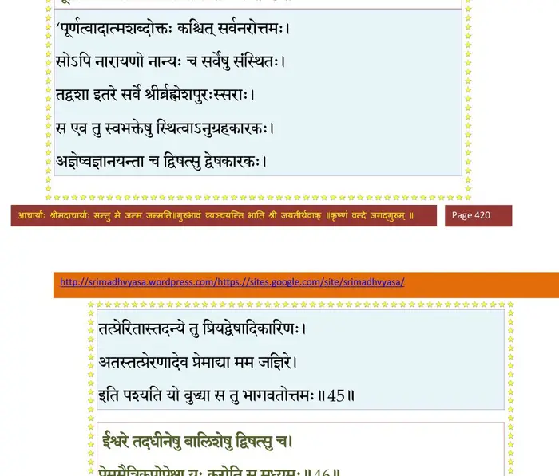
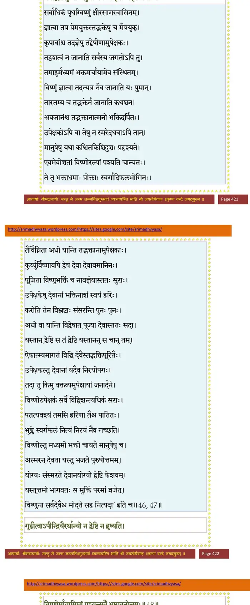
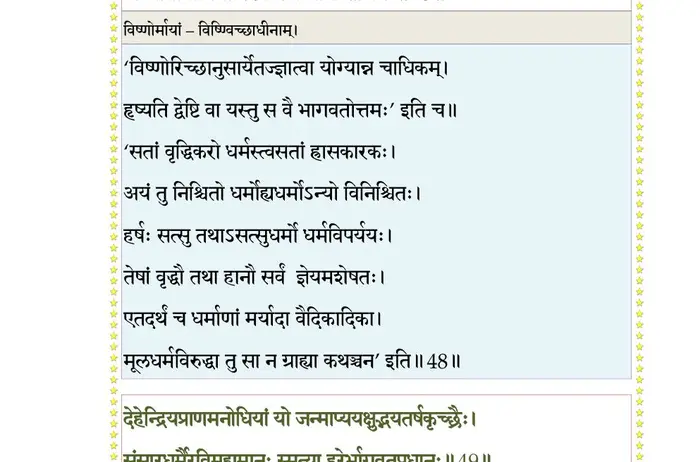
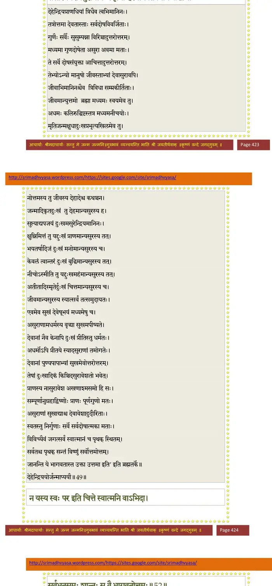
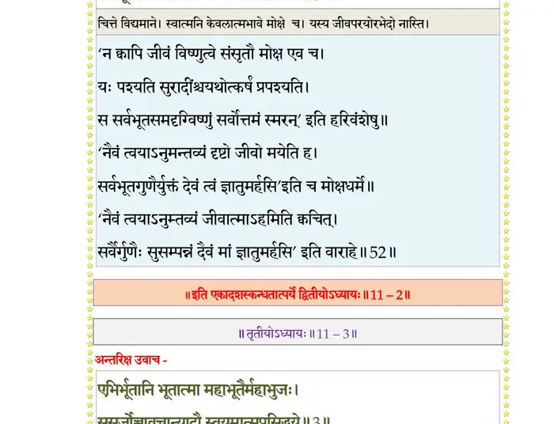

स्कन्ध 11 · अध्याय 2
श्लोक १
श्रीशुक उवाच–
गोविन्दभुजगुप्तायां द्वारकायां कुरूद्वह ।
अवात्सीन्नारदोऽभीक्ष्णं कृष्णोपासनलालसः ।। १ ।।
गोविन्दभुजगुप्तायां द्वारकायां कुरूद्वह ।
अवात्सीन्नारदोऽभीक्ष्णं कृष्णोपासनलालसः ।। १ ।।
श्लोक २
को नु राजन्निन्द्रियवान् मुकुन्दचरणाम्बुजम् ।
न भजेत् सर्वतो मृत्युरुपास्यममरोत्तमैः।। २ ।।
न भजेत् सर्वतो मृत्युरुपास्यममरोत्तमैः।। २ ।।
श्लोक ३
तमेकदा तु देवर्षिं वसुदेवो गृहागतम् ।
अर्चितं सुखमासीनमभिवन्द्येदमब्रवीत्।। ३ ।।
अर्चितं सुखमासीनमभिवन्द्येदमब्रवीत्।। ३ ।।
श्लोक ४
वसुदेव उवाच–
भगवन् भवतो यात्रा स्वस्तये सर्वदेहिनाम् ।
कृपणानां यथा पित्रोरुत्तमश्लोकवर्त्मनः।। ४ ।।
भगवन् भवतो यात्रा स्वस्तये सर्वदेहिनाम् ।
कृपणानां यथा पित्रोरुत्तमश्लोकवर्त्मनः।। ४ ।।
श्लोक ५
भूतानां देवचरितं दुःखाय च सुखाय च ।
सुखायैव हि साधूनां त्वादृशामच्युतात्मनाम्।। ५ ।।
सुखायैव हि साधूनां त्वादृशामच्युतात्मनाम्।। ५ ।।
भागवततात्पर्यनिर्णय
श्लोक ६
भजन्ति ये यथा देवान् देवा अपि तथैव तान् ।
छायेव कर्मसचिवाः साधवो दीनवत्सलाः।। ६ ।।
छायेव कर्मसचिवाः साधवो दीनवत्सलाः।। ६ ।।
भागवततात्पर्यनिर्णय

श्लोक ७
ब्रह्मंस्तथापि पृच्छामो धर्मान् भागवतांस्तव ।
यान् श्रुत्वा श्रद्धया मर्त्यो मुच्यते सर्वतोभयात्।। ७ ।।
यान् श्रुत्वा श्रद्धया मर्त्यो मुच्यते सर्वतोभयात्।। ७ ।।
श्लोक ८
अहं किल पुराऽनन्तं प्रजार्थे भुवि मुक्तिदम् ।
अपूजयं न मोक्षाय मोहितो देवमायया।। ८ ।।
अपूजयं न मोक्षाय मोहितो देवमायया।। ८ ।।
श्लोक ९
यथा विचित्रव्यसनाद् भवेऽस्मिन् विश्वतोभयात् ।
मुच्येम ह्यञ्जसैवाद्धा तथा नः शाधि सुव्रत।। ९ ।।
मुच्येम ह्यञ्जसैवाद्धा तथा नः शाधि सुव्रत।। ९ ।।
श्लोक १०
श्रीशुक उवाद–
राजन्नेवं कृतप्रश्नो वसुदेवेन धीमता ।
प्रीतस्तमाह देवर्षिर्हरेः संस्मारितो गुणैः।। १० ।।
राजन्नेवं कृतप्रश्नो वसुदेवेन धीमता ।
प्रीतस्तमाह देवर्षिर्हरेः संस्मारितो गुणैः।। १० ।।
श्लोक ११
नारद उवाच–
सम्यगेतद् व्यवसितं भवता सात्वतर्षभ ।
यत् पृच्छसे भागवतान् धर्मांस्त्वं विश्वभावनान्।। ११ ।।
सम्यगेतद् व्यवसितं भवता सात्वतर्षभ ।
यत् पृच्छसे भागवतान् धर्मांस्त्वं विश्वभावनान्।। ११ ।।
श्लोक १२
श्रुतोऽनुपठितो ध्यात आदृतो वाऽनुमोदितः ।
सद्यः पुनाति सद्धर्मो देवविश्वद्रुहोऽपि हि।। १२ ।।
सद्यः पुनाति सद्धर्मो देवविश्वद्रुहोऽपि हि।। १२ ।।
श्लोक १३
त्वया परमकल्याण पुण्यश्रवणकीर्तनः ।
स्मारितो भगवानद्य देवो नारायणो मम।। १३ ।।
स्मारितो भगवानद्य देवो नारायणो मम।। १३ ।।
श्लोक १४
अत्राप्युदाहरन्तीममितिहासं पुरातनम् ।
आर्षभाणां च संवादं विदेहस्य महात्मनः।। १४ ।।
आर्षभाणां च संवादं विदेहस्य महात्मनः।। १४ ।।
श्लोक १५
प्रियव्रतो नाम सुतो मनोः स्वायम्भुवस्य यः ।
तस्याग्नीध्रस्ततो नाभिर्ऋषभस्तत्सुतः स्मृतः।। १५ ।।
तस्याग्नीध्रस्ततो नाभिर्ऋषभस्तत्सुतः स्मृतः।। १५ ।।
श्लोक १६
तमाहुर्वासुदेवांशं मोक्षधर्मविवक्षया ।
अवतीर्णं सुतशतं तस्यासीद् ब्रह्मपारगम्।। १६ ।।
अवतीर्णं सुतशतं तस्यासीद् ब्रह्मपारगम्।। १६ ।।
श्लोक १७
तेषां वै भरतः श्रेष्ठो नारायणपरायणः ।
विख्यातं वर्षमेतद् यन्नाम्ना भारतमद्भुतम्।। १७ ।।
विख्यातं वर्षमेतद् यन्नाम्ना भारतमद्भुतम्।। १७ ।।
श्लोक १८
स भुक्तभोगां त्यक्त्वेमां निर्गतस्तपसा हरिम् ।
उपासीनस्तत्पदवीं लेभे वै जन्मभिस्त्रिभिः।। १८ ।।
उपासीनस्तत्पदवीं लेभे वै जन्मभिस्त्रिभिः।। १८ ।।
श्लोक १९
तेषां नव नवद्वीपपतयोऽस्य समन्ततः ।
कर्मतन्त्रप्रणेतार एकाशीतिर्द्विजातयः।। १९ ।।
कर्मतन्त्रप्रणेतार एकाशीतिर्द्विजातयः।। १९ ।।
श्लोक २०
नवाभवन् महाभागा मुनयो ह्यूर्ध्वमन्थिनः ।
श्रमिणा वातरशना आत्मविद्याविशारदाः।। २० ।।
श्रमिणा वातरशना आत्मविद्याविशारदाः।। २० ।।
श्लोक २१
कविर्हरिरन्तरिक्षः प्रबुद्धः पिप्पलायनः ।
आविर्होत्रोऽथ द्रुमिलश्चमसः करभाजनः।। २१ ।।
आविर्होत्रोऽथ द्रुमिलश्चमसः करभाजनः।। २१ ।।
श्लोक २२
त एते भगवद्रूपं विश्वं सदसदात्मकम् ।
आत्मनो व्यतिरेकेण पश्यन्तो व्यचरन् महीम्।। २२ ।।
आत्मनो व्यतिरेकेण पश्यन्तो व्यचरन् महीम्।। २२ ।।
श्लोक २३
अव्याहतेष्टगतयः सुरसिद्धसाध्यगन्धर्वयक्षनरकिन्नरनागलोकान् ।
मुक्ताश्चरन्ति मुनिचारणभूतनाथविद्याधरद्विजगवां भुवनानि कामम् ।। २३ ।।
मुक्ताश्चरन्ति मुनिचारणभूतनाथविद्याधरद्विजगवां भुवनानि कामम् ।। २३ ।।
श्लोक २४
त एकदा निमेः सत्रमुपजग्मुर्यदृच्छया ।
वितायमानमृषिभिराञ्जनाभा महात्मनः।। २४ ।।
वितायमानमृषिभिराञ्जनाभा महात्मनः।। २४ ।।
श्लोक २५
तान् दृष्ट्वा सूर्यसङ्काशान् महाभागवतान् नृप ।
यजमानोऽग्नयो विप्राः सर्व एवोपतस्थिरे।। २५ ।।
यजमानोऽग्नयो विप्राः सर्व एवोपतस्थिरे।। २५ ।।
श्लोक २६
विदेहस्तानभिप्रेत्य नारायणपरायणान् ।
प्रीतः सम्पूजयाञ्चक्र आसनस्थान् यथार्हतः।। २६ ।।
प्रीतः सम्पूजयाञ्चक्र आसनस्थान् यथार्हतः।। २६ ।।
श्लोक २७
तान् रोचमानान् स्वरुचा ब्रह्मपुत्रोपमान् नव ।
पप्रच्छ परमप्रीतः प्रश्नयावनतो नृपः।। २७ ।।
पप्रच्छ परमप्रीतः प्रश्नयावनतो नृपः।। २७ ।।
श्लोक २८
विदेह उवाच–
मन्ये भगवतः साक्षात् पार्षदान् वो मधुद्विषः ।
विष्णोर्भूतानि लोकानां पावनाय चरन्ति हि।। २८ ।।
मन्ये भगवतः साक्षात् पार्षदान् वो मधुद्विषः ।
विष्णोर्भूतानि लोकानां पावनाय चरन्ति हि।। २८ ।।
श्लोक २९
दुर्लभो मानुषो देहो देहिनां क्षणभङ्गुरः ।
तत्रापि दुर्लभं मन्ये वैकुण्ठप्रियदर्शनम्।। २९ ।।
तत्रापि दुर्लभं मन्ये वैकुण्ठप्रियदर्शनम्।। २९ ।।
श्लोक ३०
अत आत्यन्तिकं क्षेमं पृच्छामो भवतोऽनघाः ।
संसारेऽस्मिन् क्षणार्धोऽपि सत्सङ्गः शेवधिर्नृणाम्।। ३० ।।
संसारेऽस्मिन् क्षणार्धोऽपि सत्सङ्गः शेवधिर्नृणाम्।। ३० ।।
श्लोक ३१
धर्मान् भागवतान् ब्रूत यदि नः श्रुतये क्षमम् ।
यैः प्रसन्नः प्रपन्नाय दास्यत्यात्मानमप्यजः।। ३१ ।।
यैः प्रसन्नः प्रपन्नाय दास्यत्यात्मानमप्यजः।। ३१ ।।
श्लोक ३२
नारद उवाच–
एवं ते निमिना पृष्टा वसुदेव महत्तमाः ।
प्रतिपूज्याब्रुवन् प्रीत्या ससदस्यर्त्विजं नृपम्।। ३२ ।।
एवं ते निमिना पृष्टा वसुदेव महत्तमाः ।
प्रतिपूज्याब्रुवन् प्रीत्या ससदस्यर्त्विजं नृपम्।। ३२ ।।
श्लोक ३३
कविरुवाच–
मन्येऽकुतश्चिद्भयमच्युतस्य पादाम्बुजोपासनमत्र नित्यम् ।
उद्विग्नबुद्धेरसदात्मभावाद् विश्वात्मना यत्र निवर्तते भीः।। ३३ ।।
मन्येऽकुतश्चिद्भयमच्युतस्य पादाम्बुजोपासनमत्र नित्यम् ।
उद्विग्नबुद्धेरसदात्मभावाद् विश्वात्मना यत्र निवर्तते भीः।। ३३ ।।
श्लोक ३४
ये वै भगवता प्रोक्ता उपाया ह्यात्मलब्धये ।
अञ्जः पुंसामविदुषां विद्धि भागवतान् हि तान्।। ३४ ।।
अञ्जः पुंसामविदुषां विद्धि भागवतान् हि तान्।। ३४ ।।
श्लोक ३५
यानास्थाय नरो राजन् न प्रमाद्येत कर्हिचित् ।
धावन्नुन्मील्य वा नेत्रे न स्खलेन्न पतेदिह।। ३५ ।।
धावन्नुन्मील्य वा नेत्रे न स्खलेन्न पतेदिह।। ३५ ।।
श्लोक ३६
कायेन वाचा मनसेन्द्रियैर्वा बुध्द्यात्मना वाऽनुसृतः स्वभावम् ।
करोति यद्यत् सकलं परस्मै नारायणायेति समर्पयेत् तत्।। ३६ ।।
करोति यद्यत् सकलं परस्मै नारायणायेति समर्पयेत् तत्।। ३६ ।।
श्लोक ३७
भयं द्वितीयाभिनिवेशतः स्यात् इशादपेतस्य विपर्ययोऽस्मृतिः ।
यन्माययाऽतो बुध आभजेत् तं भक्त्यैकयेशं गुरुदेवतात्मा।। ३७ ।।
यन्माययाऽतो बुध आभजेत् तं भक्त्यैकयेशं गुरुदेवतात्मा।। ३७ ।।
श्लोक ३८
अविद्यमानोऽप्यवभाति हि द्वयो ध्यातुर्धिया स्वप्नमनोरथो यथा ।
तत्कर्म सङ्कल्पविकल्पकं मनो बुधो निदध्यादभयं ततः स्यात्।।३८।।
तत्कर्म सङ्कल्पविकल्पकं मनो बुधो निदध्यादभयं ततः स्यात्।।३८।।
भागवततात्पर्यनिर्णय

श्लोक ३९
शृण्वन् सुभद्राणि रथाङ्गपाणेः जन्मानि कर्माणि च यानि लोके ।
गीतानि नामानि तदर्थकानि गायन् विलज्जो विचरेदसङ्गः ।। ३९ ।।
गीतानि नामानि तदर्थकानि गायन् विलज्जो विचरेदसङ्गः ।। ३९ ।।
श्लोक ४०
एवं व्रतश्च प्रियनामकीर्त्या जातानुरागो द्रुतचित्त उच्चैः ।
हसत्यथो रोदिति रौति गायत्युन्मादवन्नृत्यति लोकबाह्यः।। ४० ।।
हसत्यथो रोदिति रौति गायत्युन्मादवन्नृत्यति लोकबाह्यः।। ४० ।।
भागवततात्पर्यनिर्णय

श्लोक ४१
खं वायुमग्निं सलिलं महीं च ज्योतींषि सत्वानि दिशो द्रुमादीन् ।
सरित् समुद्रांश्च हरेः शरीरं यत् किञ्च भूतं प्रणमेदनन्यम्।। ४१ ।।
सरित् समुद्रांश्च हरेः शरीरं यत् किञ्च भूतं प्रणमेदनन्यम्।। ४१ ।।
भागवततात्पर्यनिर्णय

श्लोक ४२
भक्तिः परे स्वेऽनुभवो विरक्तिः अन्यत्र चैष त्रिक एककालः ।
प्रपद्यमानस्य यथाऽश्नतः स्युः तुष्टिः पुष्टिः क्षुदपायोऽनुघासम्।। ४२ ।।
प्रपद्यमानस्य यथाऽश्नतः स्युः तुष्टिः पुष्टिः क्षुदपायोऽनुघासम्।। ४२ ।।
श्लोक ४३
इत्यच्युताङ्घ्रिं भजतोऽनु प्रीत्या भक्तिर्विरक्तिर्भगवत्प्रबोधः ।
भवन्ति वै भागवतस्य राजन् ततः परां शान्तिमुपैति साक्षात्।। ४३ ।।
भवन्ति वै भागवतस्य राजन् ततः परां शान्तिमुपैति साक्षात्।। ४३ ।।
श्लोक ४४
राजोवाच–
अथ भागवतं ब्रूत यद्धर्मो यादृशो नृणाम् ।
यथा चरति यद् ब्रूते यैर्लिङ्गैर्भगवत्प्रियः।। ४४ ।।
अथ भागवतं ब्रूत यद्धर्मो यादृशो नृणाम् ।
यथा चरति यद् ब्रूते यैर्लिङ्गैर्भगवत्प्रियः।। ४४ ।।
श्लोक ४५
हरिरुवाच–
सर्वभूतेषु यः पश्येद् भगवद्भावमात्मनः ।
भूतानि भगवत्यात्मन्नेष भागवतोत्तमः।। ४५ ।।
सर्वभूतेषु यः पश्येद् भगवद्भावमात्मनः ।
भूतानि भगवत्यात्मन्नेष भागवतोत्तमः।। ४५ ।।
भागवततात्पर्यनिर्णय

श्लोक ४६
ईश्वरे तदधीनेषु बालिशेषु द्विषत्सु च ।
प्रेममैत्रीकृपोपेक्षा यः करोति स मध्यमः।। ४६ ।।
प्रेममैत्रीकृपोपेक्षा यः करोति स मध्यमः।। ४६ ।।
भागवततात्पर्यनिर्णय
श्लोक ४७
अर्चायामेव हरये पूजां यः श्रद्धयेहते ।
न तद्भक्तेषु चान्येषु स भक्तः प्राकृतः स्मृतः।। ४७ ।।
न तद्भक्तेषु चान्येषु स भक्तः प्राकृतः स्मृतः।। ४७ ।।
भागवततात्पर्यनिर्णय

श्लोक ४८
गृहीत्वापीन्द्रियैरर्थान् यो न द्वेष्टि न हृष्यति ।
विष्णोर्मायामिमां पश्यन् स वै भागवतोत्तमः।। ४८ ।।
विष्णोर्मायामिमां पश्यन् स वै भागवतोत्तमः।। ४८ ।।
भागवततात्पर्यनिर्णय

श्लोक ४९
देहेन्द्रियप्राणमनोधियां यो जन्माप्ययक्षुद्भयतर्षकृच्छै्रः ।
संसारधर्मैरविमुह्यमानः स्मृत्या हरेर्भागवतप्रधानः।। ४९ ।।
संसारधर्मैरविमुह्यमानः स्मृत्या हरेर्भागवतप्रधानः।। ४९ ।।
भागवततात्पर्यनिर्णय

श्लोक ५०
यः कामकर्मबीजानि पश्यत्येषां च सम्भवम् ।
वासुदेवैकनिलयः स वै भागवतोत्तमः।। ५० ।।
वासुदेवैकनिलयः स वै भागवतोत्तमः।। ५० ।।
श्लोक ५१
न यस्य जन्मकर्मभ्यां न वर्णाश्रमजातिभिः ।
सञ्ज्ञितेऽस्मिन्नहम्भावो देहे वै स हरेः प्रियः।। ५१ ।।
सञ्ज्ञितेऽस्मिन्नहम्भावो देहे वै स हरेः प्रियः।। ५१ ।।
श्लोक ५२
न यस्य स्वः पर इति चित्ते स्वात्मनि वाऽभिदा ।
सर्वभूतसमः शान्तः स वै भागवतोत्तमः।। ५२ ।।
सर्वभूतसमः शान्तः स वै भागवतोत्तमः।। ५२ ।।
भागवततात्पर्यनिर्णय

श्लोक ५३
त्रिभुवनविभवहेतुभिर्विकुण्ठस्मृतिभिरजेशसुरादिभिर्विमृग्यात् ।
न चलति भगवत्पदारविन्दाल्लवनिमिषार्धमपि स्म स वैष्णवाग्य्रः।। ५३ ।।
न चलति भगवत्पदारविन्दाल्लवनिमिषार्धमपि स्म स वैष्णवाग्य्रः।। ५३ ।।
श्लोक ५४
भगवत उरुविक्रमाङ्घ्रिशाखानखमणिचन्द्रिकया निरस्ततापे ।
हृदि कथमुपसीदतां पुनः स प्रभवति चन्द्र इवोदितेऽर्कतापः ।।५४।।
हृदि कथमुपसीदतां पुनः स प्रभवति चन्द्र इवोदितेऽर्कतापः ।।५४।।
श्लोक ५५
विसृजति हृदयं न यस्य साक्षाद् हरिरवशाभिहितोऽप्यघोघनाशः ।
प्रणयरशनया धृताङ्घ्रिपद्मः स भवति भागवतप्रधान उक्तः।। ५५ ।।
प्रणयरशनया धृताङ्घ्रिपद्मः स भवति भागवतप्रधान उक्तः।। ५५ ।।
।। इति श्रीमद्भागवते एकादशस्कन्धे द्वितीयोऽध्यायः ।।